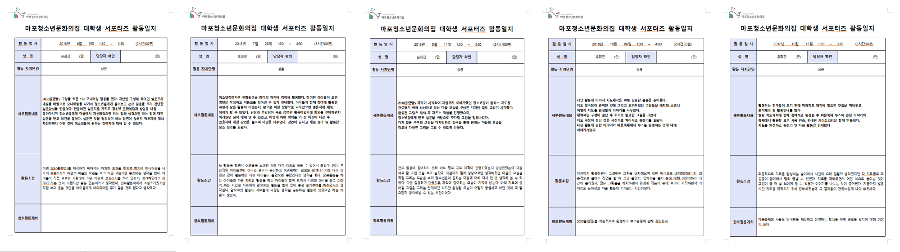

町自治委員会サークル サポート活動
中高生たちが集まったサークル活動に参加して未来地図企画活動をしてきました。

活動期間 : 2017.3.6 ~ 2018.12.22
活動機関 : 区立青少年文化の家(事業分野 : 青少年活動支援·教育)
メンバー : 10人
町自治委員会サークル活動に参加した理由
IT技術の発展によってこれから私たちが生活する環境の変化について関心を持っていきました。それでわたしたちが住んでいる所を分析し、発展方向について考えることができるサークル活動に参加しました。
活動目標
町安全地図を製作し、配布すること。
青少年たちが設計する未来都市について企画すること。
インタビューやアンケート調査を通して青少年たちの意見を分析すること。
絵を通して未来地図を完成し、年末の施設イベントの時、ブースで人達に見せること。
活動内容
中高生たちをサポートしながら未来地図の準備をしていきました。
アンケート調査をするために討論した内容から質問を選んで30人の人達に設問を受けました。
活動日に参加できなかったメンバーに提供するために会議の内容を記録しました。
年末に行う施設のイベントの時、ブースを運営しました。
学んだこと
目標した日まで完成するためには予想できなかった問題や日程の変更にたいする対策が必要だということ。
討論する時、話やすい雰囲気を作ることの重要性。
資料を分析して必要な情報を探す方法を身につけたこと。
活動日誌
